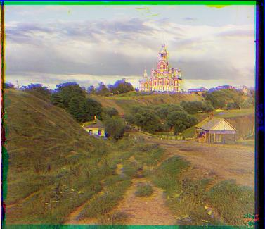

Cathedral (Unaligned)

Cathedral (L2 Aligned)
Cathedral (NCC Aligned)
Sergey Prokudin-Gorsky was a Russian chemist and photographer who pioneered color photography in the early 20th century. He took a series of photographs of the Russian Empire, which were later compiled into a collection by the Library of Congress. The collection contains images of the Russian Empire in the early 20th century, including landscapes, people, and architecture. These photographs are taken using a special camera that captures three black-and-white images of the same scene, each with a different color filter. The idea was that these images could be later combined to create a color photograph, which was not possible at the time. This project aims to combine these three black-and-white images and recreate the intended original color photograph.
The fundamental approach used in this project is to first take the three black-and-white photos representing red, green, and blue, and to align them so that the combined photo is correctly colored. This is done by setting the blue image as the reference image, and then aligning the red and green images to the blue image. To align the images, I shift the source photo -15 to 15 pixels horizontally and vertically, and then find the offset that best aligns with the reference image. In this project I have used the sum of squared differences (L2) and normalized cross-correlation (NCC) as the similarity measures to find the best alignment. More specifically, L2 minimizes the L2 norm (sum of squared differences) between the two images, and NCC maximizes the normalized cross-correlation between the two images. Once the images are aligned, I combine them to create the final color image. Some of the results are shown below.
Cathedral (Unaligned)
Cathedral (L2 Aligned)
Cathedral (NCC Aligned)

Tobolsk (Unaligned)

Tobolsk (L2 Aligned)
Tobolsk (NCC Aligned)

Monastery (Unaligned)

Monastery (L2 Aligned)
Monastery (NCC Aligned)
As the monastery image above shows, L2 and NCC alignment methods can sometimes fail to align the images correctly. This can happen when the images have low contrast or when the images have similar or noisy features. To address this issue, I used Canny edge detection algorithm before alignment to make the features more prominent. By having more prominent features and suppressing noise, the alignment methods can find better alignments. Canny edge detection works by identifying the edges in an image by finding the gradient magnitude and direction of the image. The edges are then thinned to a single pixel width, noises are suppressed, and then the edges are connected to find the final edges. Applying Canny edge detection with threshold values of 20 and 120 yielded in a much clearer image across most photos, as shown below.
Monastery (Unaligned)
Monastery (L2 Aligned)
Monastery (L2 Aligned, Canny)
Cathedral (Unaligned)
Cathedral (L2 Aligned)
Cathedral (L2 Aligned, Canny)
Emir (Unaligned)
Emir (L2 Aligned)
Emir (L2 Aligned, Canny)
Church (Unaligned)
Church (L2 Aligned)
Church (L2 Aligned, Canny)
Self Portrait (Unaligned)
Self Portrait (L2 Aligned)
Self Portrait (L2 Aligned, Canny)
The images in the collection are often underexposed or overexposed, which can lead to poor alignment results. To address this issue, I have used histogram equalization to improve the contrast of the images. Histogram equalization is a technique that spreads out the intensity values of an image, so that the full range of intensities is used. This can help to improve the alignment results, especially for images that are underexposed or overexposed. In this implementation two types of histogram equalization are used: global and adaptive. Global histogram equalization spreads out the intensity values of the entire image, while adaptive histogram equalization uses regions of the image to equalize the histogram. Adaptive histogram equalization can be more effective for images with varying lighting conditions, as it can equalize the histogram of each region separately. We notice this in most cases, where global histogram equalization tends to oversaturate the image. In my implementation, I used tile grid size of 8x8, and with contrast limit of 2.
Onion Church (Aligned)
Onion Church (Global)
Onion Church (Adaptive)
Onion Church (Aligned)
Church (Global)
Church (Adaptive)
Monastery (Aligned)
Monastery (Global)
Monastery (Adaptive)
All the provided images have borders around the photos, and removing these can help the alignment process. To address this issue, I have implemented an automatic image cropping algorithm that removes the borders from the images. The algorithm works by looking at each edge of an image and then checking if the bordering area is mostly white or black. If the image is mostly white or black, it suggests that the image has a solid color border, and thus the border is removed. All images presented in this page have already been cropped with this algorithm. For example, the border for `lady.tif` has been reduced by roughly 5%, and the border for `emir.tif` has been reduced by around 3.5% with this algorithm. The algorithm can potentially be improved further by checking the variance of each border lines and comparing it to other colors. I have also tried using the Canny edge detector to detect the borders, but this method was not as effective in my implementation.
Lady (Original)
Lady (Automatically cropped)
Unaligned
L2 Aligned
NCC Aligned
L2 Aligned with Canny
L2 Aligned with Canny
(Global Histogram Equalization)
L2 Aligned with Canny
(Adaptive Histogram Equalization)